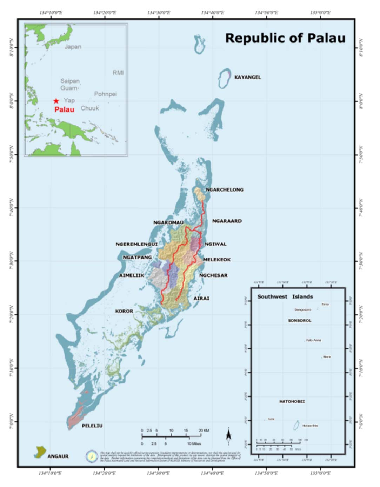
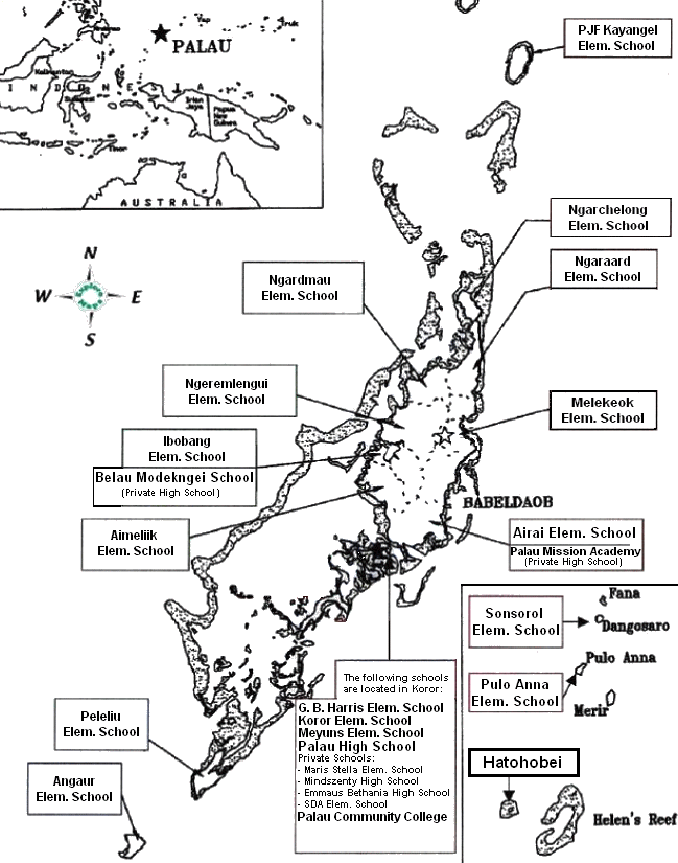

Foreword

|
REPUBLIC OF PALAU
MINISTRY OF EDUCATION
OFFICE OF THE MINISTER
|
|
The Ministry of Education in Palau is pleased to introduce to you the Education Statistical Yearbook 2017. While the issue of timeliness and data quality remain the key barriers in the whole process of data collection, the Ministry of Education (MOE) has made significant change on this statistical output with the technical support of the regional Education Management Information System (EMIS) facility team from the Secretariat of Pacific Community.
The education statistics presented in this Statistical Yearbook are divided into seven main sections, these are Education System in Palau, School Information, Student Information, Student Assessments, Teacher Infor- mation, Fiscal Information, 2017-2026 Education Master Plan, and Key Indicators. This Statistical Yearbook primarily captures data on MOE mandated areas in primary and secondary schools. It is imperative for MOE to consolidate its education statistics in a collective database. This way forward will require a review on school data collection processes and the core functions and roles for planning, management, and policy decision- making.
This Education Statistical Yearbook 2017 is a step forward towards a comprehensive data collection and data validity systems in the future that will range from the Early Childhood Care and Education (ECCE), Primary Education, Secondary Education, Post-Secondary Education for Education Statistics in Palau. The Ministry of Education relies on collaborative efforts from partner agencies for data collection and compilation of a compre- hensive Education Statistical Yearbook for the entire education system of Palau.
The time series data are made available in this Statistical Yearbook to enable you, our partners, and end users of education statistics to have a holistic understanding of our education system. Planners and policy makers as well as researchers from all levels could source their information from this Statistical Yearbook for future refer- ence. I would like to encourage schools and communities at large to make good use of the data that is published in this Statistical Yearbook.
Access to quality data is critical in all levels of policy formulation and decision making as we work collectively toward the achievement of Sustainable Development Goal 4 to provide quality education. Hence, evidence- based information needs to be automated and regularly disseminated to the public for our national government, our schools, our partners, and communities to make informed decisions.
/s/ Sinton Soalablai
Minister of Education
Table of Contents
List of Tables 4
List of Figures 5
Introduction 6
Maps
Map of Palau 7
Map of School Locations 8
Abbreviations 9
Education System in Palau
ECCE/Pre‐School 10
Primary Education 10
Secondary Education 11
CTE Education 11
Post Secondary Education 12
School Information 13
Student Information
Enrollment 14‐17
Internal Efficiency Indicators 17‐18
Student Assessments 19‐25
Teacher Information
Teacher Count & Raos 26‐27
Fiscal Information 28‐29
2017‐2026 Education Master Plan 30
Key Indicators 31‐34
SDG 4 Targets & Core Indicators 35‐40
Acknowledgments 41
Annex 42‐46
List of Tables
Table 1: Education System in Palau 10
Table 2: Total Number of Public Schools in Palau 13
Table 3: Total Number of Private Schools in Palau 13
Table 4: GER in Public & Private Elementary Schools by Gender 14
Table 5: GER in Public & Private High School Schools by Gender 14
Table 6: Total Enrollment in Elementary Schools by Time Series 14
Table 7: Total Enrollment in High Schools by Time Series 14
Table 8: Total Enrollment in Private Pre-School and Kindergarten by Gender 15
Table 9: Total Enrollment in Public Elementary School by Age and Grade Level 15
Table 10: Total Enrollment in Private Elementary School by Age and Grade Level 15
Table 11: Total Enrollment in Public High School Age and Grade Level 16
Table 12: Total Enrollment in Private High School Age and Grade Level 16
Table 13: Total Enrollment in Palau Community College by Class Level & Gender 16
Table 14: Public Elementary Students with Disabilities 17
Table 15: Public High School Students with Disabilities 17
Table 16: Promotion, Repetition, & Dropout Rates in Public Schools 17
Table 17: MOE Student Assessment Tools in Public Schools 20
Table 18: Total Number of School Teachers 26
Table 19: Total Number of School Teachers by School Level 26
Table 20: Total Number of Public School Teachers by Nationality 26
Table 21: Public School Student - Teacher Ratio 27
Table 22: Ministry of Education Budget 28
Table 23: Ministry of Education Expenditures 29
Table 24: MOE Employee Position Classification 33
Table 25: Proportion of Children and young people: (a) in Grades 2 37
Table 26: Proportion of Children and young people: (a) in Grades 3 37
Table 27: Proportion of Children at the End of Primary: (b) in Grades 8 37
Table 28: Participation Rate in all Kindergartens 38
Table 29: Participation Rate in Formal Education (Ages 14-24) 38
Table 30: Proportion Rate in all Public Schools with Information and Communication Literacy 38
Table 31: Student Parity Indices by Gender 38
Table 32: Student Parity Indices by Students with Disabilities 39
Table 33: Public School Gender Party Index for Grade 8 Mathematics 39
Table 34: Basic Necessities, Proportion Rate in all Schools 39
Table 35: Proportion Rate on Recipient Scholarships at all Public Schools 39
Table 36: Proportion of Teachers in Public Schools 40
Table 37: Proportion Rate of Children who reach Grade 8 40
List of Figures
Figure 1: Palau Education System 10
Figure 2: Public School Graduation Rates 18
Figure 3: Public Cohort Completion Rates 18
Figure 4: National Report Card Average Scores 20-22
Figure 5: National Quarterly Assessment Test Average Scores 23-24
Figure 6: Palau English Reading Assessment 25
Figure 7: SAT 10 Average Stanine Results 25
Figure 8: Ministry of Education Budget 28
Figure 9: Ministry of Education Expenditures 29
Figure 10: 2017-2026 Education Master Plan Policy Goals 30
Figure 11: Enrollment in Public Schools by Grade Level 31
Figure 12: Enrollment in Public Schools by Gender 31
Figure 13: Public School Student Average Daily Absence Rates 32
Figure 14: Percentage of Teachers in Public Schools by Education Level 33
Figure 15: MOE List of Partner Agencies 34
Introduction
The Education Statistical Yearbook 2017 is an annual publication of the Ministry of Education. It provides a range of statistical information about education in the Republic of Palau and serves as a reference for school officials and others responsible for planning and implementing activities concerning education and the devel- opment of our youth. The statistical information contained in this publication is comprised of data collected with the Ministry of Education’s Student Information System and the 2017 Annual School Survey conducted in May 2017 and data from other sources within the Ministry of Education.
The layout of this Education Statistical Yearbook begins with a summary of all the schools in the Republic of Palau. The following shows how this publication is organized.
- Education System in Palau
- School Information
- Student Information
- Student Assessments
- Teacher Information
- Fiscal Information
- 2017-2026 Education Master Plan
- Key Indicators
- SDG 4 Targets & Core Indicators
Map of Palau

Map of Schools

Abbreviations
- ECCE
- Early Childhood Care and Education
- EMIS
- Education Management Information System
- EQAP
- Educational Quality and Assessment Program
- FEDMM
- Forum Education Ministers Meeting
- FY
- Fiscal Year
- GBH
- George B. Harris Elementary School
- GER
- Gross Enrollment Rate
- GPI
- Gender Parity Index
- MOE
- Ministry of Education
- PERA
- Palau English Reading Assessment
- PHS
- Palau High School
- PILNA
- Pacific Islands Literacy and Numeracy Assessment
- PJF
- Palau Japan Friendship (Kayangel) Elementary School
- PNC
- Palau National Code
- PTSA
- Parent Teacher Student Association
- QAT
- Quarterly Assessment Test
- RPPL
- Republic of Palau Public Law
- SAT
- Stanford Stanford Achievement Test
- SAT 10
- Stanford Achievement Test 10th Edition
- SDG 4
- Sustainable Development Goal 4
- SIS
- Student Information System
- SmIS
- Small Island States
- SPC
- Secretariat of Pacific Community
- STR
- Student Teacher Ratio
- SY
- School Year
- WASC
- Western Association of Schools and Colleges
Education System In Palau
Palau’s typical school year begins in August and ends in May. There are 184 instructional days. Public ele- mentary schools have six class periods per day for 45 minutes. The one public high school has four class periods per day for 90 minutes each. The five core subjects taught are Palauan studies, English, math, sci- ence and social studies. Additional subjects taught in the elementary schools are physical education, health, career guidance, arts and crafts, and agriculture.
Table 1: Education System in Palau
| Education |
School/Level |
Public |
Private |
Grades from |
Age from |
Ed Act |
| Early Childhood |
Head Start/Kindergarten |
0 |
2 |
0 |
3 to 4 |
Yes |
| Pre-School |
Grade K |
2+ |
2 |
0 |
5 |
Yes |
| Primary |
Elementary |
16 |
2 |
1 to 8 |
6 to 13 |
Yes |
| Secondary |
High School |
1 |
4 |
9 to 12 |
14 to 17 |
Yes |
| Post Secondary |
College |
1 |
0 |
13 |
18 |
Yes |
ECCE/Pre-School
The Republic of Palau has an ECCE program that is a separate entity funded by United States federal grants. The Head Start program has a “Child Development and Early Learning Framework” that guides the curriculum implementation and assessments for planning teaching and learning. The framework represents the Head Start foundational approach to school readiness by promoting positive outcomes in early child- hood programs serving age 3-5 children. Children’s teaching and learning experiences are aligned to the school readiness goals and progress is being tracked across the curriculum. The Head Start and other early childhood programs include dual language learners and children with disabilities. Approximately 80% of ECCE or Pre-School students, based on their enrollment counts, attend Palau Head Start program. For the reaining 20%, students and their parents have the option to select several privately-operated kindergartens.
Primary Education
The primary education covers the first eight years of formal edu- cation from grade one to grade eight. The official entry age is at six years of age. The primary schools are strategically located throughout Palau as shown in Map of School Locations to provide universal access to primary education. The primary education cur- riculum frameworks include Palauan concepts to contextualize learning to fit the social, economic, environmental, and political issues and practices relevant to the people and the nation. The pri- mary education is keen on shaping a well-rounded student to be successful in the Palauan society and the world with the basics of education knowledge and skills for academic, physical, and hu- man growth and wellbeing.
The primary schools have four quarters of approximately 45 days or nine weeks of instructions and testing on the last week with a total of 184 instructional days per school year. The typical school schedule begins at 8:00 am with five core subjects (Math, English, Science, Social Studies, Palauan Studies) for 45 minutes each class with an hour lunch break and electives in the afternoon until dismissal of students at 2:30 pm. The MOE curricula incorporates the Singapore Mathematics standards and the U.S. Common Core standards for both English and math. The development of Palauan Studies is ongoing with local data collection and docu- mentaries to improve the subject.
In addition, private primary schools in Palau are mandated by the Ministry of Education to teach the five core subjects (Math, Science, English, Social Studies, and Palauan Studies) as required in their curriculum.
Secondary Education
The secondary education prepares students for higher education and or the world of work with continued emphasis on the core business of education for student success in the Palauan society and the world. The Palau st National Code compulsory education law mandates the Ministry of Education to educate the students from 1 to 12th grades from 6 years old to 17 years old or until graduation from secondary education. (See Annex for PNC for Ed)
Palau High School (PHS) is the only public secondary school in Palau. PHS is fully accredited by the West- ern Association of Schools and Colleges (WASC). A typical school day has four courses for 90 minutes each class time that begins at 8:00 am, with two classes in the morning and an hour lunch, and two more classes in the afternoon and ends at 3:30 pm. PHS operates on a semester basis with five core subject requirements (Math, English, Science, Social Studies, Palauan Studies) including Health, Physical Education, Career Academy courses, Elective courses with a total of 27 credits requirement for graduation in four years – Freshmen (9th), Sophomore (10th), Junior (11th), and Senior (12th).
The private secondary schools are mandated by the Ministry of Education to incorporate in their curriculum frameworks with five core subject requirements similar to public secondary schools. The Ministry of Educa- tion also charters all public or private primary and secondary schools in Palau. By law, all schools are man- dated to holistically educate students to be well versed in the English and Palauan studies and can read and write in both languages ready for college at Palau Community College (PCC) or abroad.
Approximately two-thirds of high school aged students attend the one public high school with the remaining attending several private schools. There are two educational pathways that lead to a high school diploma with a career academy certificate or an individualized education certificate for students with special needs. The system is based on credits achieved, as opposed to years spent in school. Career and Technical Education (CTE) is also offered as part of the whole high school learning experience.
Career Technical Education (CTE)
Career guidance classes in primary schools serve as early career discovery of interest as students make transi- tion to secondary school. The career pathways offered at Palau High School through the career academies prepare students for post secondary education or entry level careers. The structured career academies include both school based and work based learning activities. The CTE courses include two credits of career develop- ment courses and four courses of career pathways. PHS career academies are Agriculture, Automotive, Busi- ness Information, Health, Construction, Tourism & Hospitality, and Liberal Arts. PHS graduates pursue aca- demic and career and technical choices toward higher education and the world of work.
Post Secondary Education
Palau Community College (PCC) is a U.S. accredited tertiary education in Palau by Accrediting Commission for Community and Junior Colleges of the Western Association of Schools and Colleges. PCC is a two-year higher learning institute with a catalog of courses offered in various discipline majors and minors in certifi- cate programs and associate degrees. PCC vocational technical education programs allow for various careers for diversified students to choose career pathways to pursue higher education. PCC also added a vocational certification program to promote skilled workforce for citizens in Palau. PCC in partnership with the Minis- try of Education also offers bachelors and master’s degree through San Diego State University (SDSU) Bach- elors and Masters Cohorts program in educational leadership and public administration. PCC also have agreements with other line ministries, agencies, and U.S. grant programs that serves the students academical- ly, vocationally, and career pathways for job opportunities locally and abroad.
School Information
In the Republic of Palau, there are 18 public schools and six private schools in the country. For elementary schools, there are 16 public schools and two private schools. Palau High School is the only public high school in Palau while there are four privately operated high schools.
Table 2: Total Number of Public Schools in Palau, 2016-2017
| Education Level | School Name |
|---|
| Elementary | 1 | Aimeliik Elementary School |
| 2 | Airai Elementary School |
| 3 | Angaur Elementary School |
| 4 | George B. Harris Elementary School |
| 5 | Ibobang Elementary School |
| 6 | Koror Elementary School |
| 7 | Melekeok Elementary School |
| 8 | Meyuns Elementary School |
| 9 | Ngaraard Elementary School |
| 10 | Ngarchelong Elementary School |
| 11 | Ngardmau Elementary School |
| 12 | Ngeremlengui Elementary School |
| 13 | Peleliu Elementary School |
| 14 | PJF (Kayangel) Elementary School |
| 15 | Pulo Anna Elementary School |
| 16 | Sonsorol Elementary School |
| 17 | Hatohobei Elementary School |
| High School | 1 | Palau High School |
Table 3: Total Number of Private Schools in Palau, 2016-2017
| Education Level | School Name |
|---|
| Elementary | 1 | Maris Stella School |
| 2 | Seventh Day Adventist Elementary School |
| High School | 1 | Belau Modekngei School |
| 2 | Emmaus Bethania High School |
| 3 | Mindszenty High School |
| 4 | Palau Mission Academy |
All public and private schools have a Parent Teacher Student Association (PTSA) whereas a chairperson is voted in to work closely with school officials and report to the association. PTSA’s hold meetings throughout each school year to ensure that students continue to meet progress.
Student Enrollment
Internal Efficiency Indicators
Student Assessments
In terms of system-wide assessment, the Ministry of Education utilizes three locally developed assessment tools, one international standardized test, and one regional assessment tool to measure student achievement levels in the core content areas. Each system-wide assessment tools serve different purposes. The system- wide assessment tools include National Report Card Scores, Palau English Reading Assessment (PERA), Quarterly Assessment Test (QAT), Stanford Achievement Test 10th Edition (SAT10), and Pacific Islands Lit- eracy and Numeracy Assessment (PILNA).
The purposes of system-wide assessments are as follows:
- Measure achievement levels in reading
- Measure achievement levels in English language arts, Palauan studies, math, science and social studies
- Public high school accreditation
- Identify areas of strength and weaknesses in core subjects
- Inform teaching and learning process
- Determine professional development activities
- Guide school improvement planning
The following table shows the system-wide assessment tools as implemented by the Ministry to all public schools.
This publication will show each assessment along with a brief description of its purpose and student results.
The National Report Card Average Scores are derived from student quarterly report cards showing aca‐ demic performance on a quarterly basis. The average scores are reported in this publicaon by content areas from Grades 1‐8.
Palau English Reading Assessment (PERA) is a criterion test based on the current MOE English reading curriculum for Grades 1-8. The test assesses the elements of reading in phonics, vocabulary, literary ele- ments, and reading comprehension. Students’ scores on the PERA do not affect their grades. Figure 6 shows the PERA pre and post student results for school year 2017.
The Stanford Achievement Test 10th Edition (SAT10) is an internationally recognized United States stand- ardized test that is used by the Ministry to measure subject area content and process skills in reading, lan- guage, spelling, study skills, listening, mathematics, science and social science. SAT 10 is a norm- referenced test which involves a comparison of students’ scores against a norm reference group of U.S. stu- dents that took the same test.
Caution should be taken when interpreting the performance of students on the SAT10 Achievement Test in view of the differences between Palau students and US norm group. The SAT10 test results are defined using the following stanine score range; 1, 2, and 3 is below average; 4, 5, or 6 is average and 7, 8, or 9 is above average. Figure 6 shows that on average, public schools stanine ranking is at 3.3 in comparison to a 2007 norm reference group in United States.
Teacher Counts and Ratios
In accordance with Palau’s national civil service rules and regulations, all public school teachers go through a certification process in which they must qualify by satisfying specific requirements. It is through such certifi- cation system that all public school teachers are initially certified. In relation, Palau’s National Code Title 22 is awaiting further legislation from Palau’s congress prior to its full implementation of teacher’s certification by the Ministry of Education. (See Annex for Palau’s National Civil Service and PNC Title 22)
Fiscal Information
The Ministry of Education’s Budget is appropriated by Palau’s national congress. Table 22 shows the total budget appropriate for school year 2017 based on the Republic of Palau’s Public Law (RPPL 10-1). Actual expenses are disaggregated into payroll expenses and other expenses. The remaining balance will be expend- ed by the end of the fiscal year. Figure 8 shows the breakdown of the Ministry of Education’s 2017 appro- priated budget by percentages.
Education Master Plan
2017-2026 Education Master Plan Policy Goals
The new Education Master Plan is focused on five policy priorities, which are to promote student success with Student Centered Learning, Educational and Instructional Leadership, Curriculum Enhancement, MOE Resource and Partnership Support. The approach is that MOE focuses on the whole child in developing his/ her skills and knowledge of today’s world.
This year’s education statistics are gathered under the above policy goals. The Ministry of Education has agreed upon the series of data and indicators in this statistical yearbook. This document will be improved gradually each year to meet data needs. This statistical yearbook covers mostly data on school enrollments, teacher data, and few indicators related to the International Mandates of Sustainable Development Goal 4 for Quality Education. This document is also reporting on other data as indicated by data source.
A key indicator section was created to showcase significant data areas in support of the new 10 year educa- tion master plan.
Key Indicators
In conjunction with the Palau Ministry of Education 10-year Education Master Plan for 2017-2026. The analysis of this 2017 Statistical Yearbook is mainly focused on statistics related to education sector with key indicators indicated within the new master plan. The grouping of indicators is clustered into five main policy goals focusing on student success.
Student success rely on many variables and this report aims to showcase needed data to assist in decision making and to get Palau students to be successful in Palau’s society and the world. Teaching and learning are the core business for MOE for which student enrollment and performance are valuable factors. For the past three years, student enrollment has continued to decrease in relation to the Republic of Palau’s census counts. Figure 11 shows the student enrollment by grade level indicating the decreasing trend line. The stu- dent assessment results are reported on page 19 to 25 of this publication.
In 2017, MOE recorded 1625 students who enrolled in elementary schools and 610 students enrolled in high school. In total, there are 2235 students enrolled in Grade 1 to Grade 12. Figure 12 is showing that there are more males (53%) then females (47%) in both public elementary and high school.
Another valuable factor to student success is their daily school absences. Student absences are recorded dai- ly by each homeroom teacher in all public schools. On a quarterly basis, absence data are collected and stored within the MOE student information system. The average daily absence rate in all public schools from Grades 1-12 is at 6.2%. Figure 13 shows the attendance rate of each quarter and grade level. In 2017, Grade 2 and 10 show a high absence rate as compared to other grade levels but overall, the absentee rate stayed be- low 12% of the enrolled students.
Education and instructional leadership is one of the essential policy goals of the new 2026 Education Master Plan. There are 233 teachers in the teaching force of whom 89% of them are Palauan and 8% are Filipino teachers. The remaining 3% belong to other ethnic groups. The Filipino teachers are mainly teach- ing Math and Science in Palau’s public high school. Figure 14 illustrates the academic level of teachers who are currently teaching in Palau public schools. About 38.6% are teachers with a high school diploma, some college credits, and have a certificate of achievement, 36.9% have an associate degree, 20.6% are bachelor degree holders and 3.9% of them have their Master’s degree.
Curriculum Enhancement is another on-going activity at the Ministry of Education geared towards student success. The cur- riculum focuses on five core subject areas, which are Palauan studies, English, math, science, and social studies.
In addition, work is underway to also include health and physical education. To date, English and math curricula frameworks were revised in 2013. Science was also revised in 2015. Health is currently under revision and will be piloted in schools in school year 2017. The other curriculum frameworks, which include so- cial studies, Palauan studies, and physical education, are sched- uled for revision soon as funding becomes available.
MOE Resource Support is another valuable goal for MOE’s plans toward student success. MOE resource support could be improved if the Ministry is equipped with sufficient resources and relevant staff. This year the Ministry of Education has rec- orded 428 staff, there is a Minister of Education, 2 bureau direc- tors, 4 division chiefs, 14 school principals, 3 vice principals and 233 classroom teachers. All teachers’ salaries are paid by Palau’s National Government. The rest of the MOE employees are sup- port staff.
The share of budget allocated to the Ministry of Education as percentage of the National Government budget was at 10% in 2017. About 74.6% of the Education budget in 2017 was spent on personnel salaries, which include classroom teachers.
Prior to its unremitting support in strengthening teaching and learning in the classroom, the Ministry of Education has provided schoolbooks and instructional supplies to all public schools since 1981. About 3% of the MOE national recurrent budget has been spent on schoolbooks and Instructional supplies.
Finally, Partnership Support is the support given by a number of government and non-government agencies, which foster student success. Figure 15 shows a list of support agencies that have been instrumental in as- sisting Palau students excel on their studies.
- Office of the President
- Office of the Vice President/Ministry of Justice
- Ministry of Community & Cultural Affairs
- Ministry of Finance
- Ministry of Health
- Ministry of Natural Resources, Environment & Tourism
- Ministry of Public Infrastructure, Industries & Commerce
- Ministry of State
- Olbiil Era Kelulau (National Congress)
- Belau Employers and Educators Alliance
- Belau Family School Community Association
- Belau Head Start Program
- Belau Tourism Association
- Palau Community Action Agency Palau Community College
- Palau Conservation Society
- Palau International Coral Reef Center Palau Talent Search Program
- Palau Visitors Authority
- State Governments
- School Parent Teachers Association